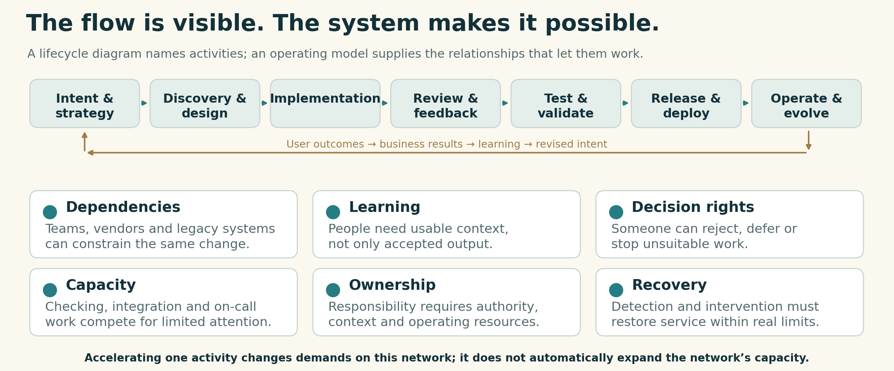
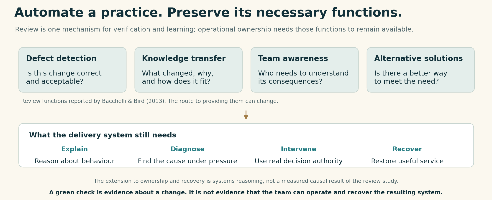
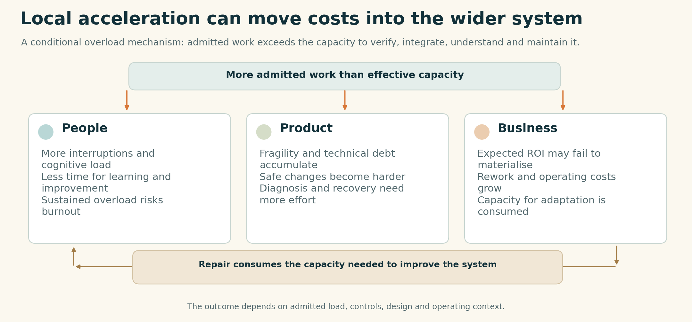
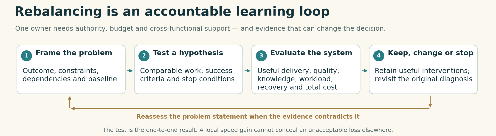

Vitalii Oborskyi · 1 November 2026 · vitaliioborskyi.ai

Machine-speed production does not automatically expand the capacity needed to own the result.
Source and image details
Author-selected AI-assisted editorial illustration from the R2 kit. Original non-brand editorial artwork, CC BY 4.0. Web rendition uses the existing JPEG compression; original accepted PNG is retained in source provenance and the PDF.
The AI code review bottleneck is a symptom
“Code review is the next bottleneck” is progress. It is not the full diagnosis.
My diagnosis: AI adoption has pushed the SDLC out of balance at industry level. We are accelerating cognitive work faster than organisations are rebuilding the capacity to understand, verify, integrate and own its results.
This is a systemic counterargument to a review-only diagnosis of AI-assisted software delivery. Review automation can remove a real constraint. A shorter review queue, by itself, does not establish that the delivery system is producing better outcomes.
Buying licences changes what people can produce. It does not redesign the system that turns that production into business value. When the strategy stops at access, training and usage targets, the organisation leaves the hardest part of the transformation to chance.
The gap is visible in the evidence. Writing Code vs. Shipping Code finds that gains in coding activity exceed downstream output gains, even as releases increase. DORA’s 2025 report identifies the organisational system—not the tools alone—as central to returns from AI.
A review queue is one place where the mismatch surfaces. Requirements, design, testing, integration and operations have their own constraints. The machine–human speed gap changes the relationships between them.
This is not only a coding asymmetry. Faster requirements, design options, tests and diagnoses can all increase the volume and variety of work demanding a human or organisational response. The constraint is the capacity to turn those outputs into decisions and owned outcomes.
The problem is not that one step is too slow. We changed the pace of work without redesigning the system responsible for the result.

Figure 1. Speed asymmetry across the lifecycle. Curve heights and gaps are illustrative, not measured values, rankings or throughput estimates.
Source and image details
Original explanatory diagram by Vitalii Oborskyi, developed from the supplied infographic. Original non-brand editorial artwork, CC BY 4.0.
What the code-review bottleneck accounts actually show
Anthropic’s Code Review announcement describes review pressure as code output grows. Microsoft’s Stephen Toub describes generating pull requests faster than expert colleagues could review them. OpenAI’s Codex account connects rising PR volume with scarce contextual knowledge; GitHub’s review guidance describes human review capacity lagging agent-generated work. These are first-party accounts and guidance, not a controlled measure of every organisation.
DORA’s analysis of Google engineers’ experiences reports gains alongside verification overhead and added reviewer burden. It also recommends measuring the whole lifecycle. That supports the systemic argument rather than contradicting it.
The disagreement is with reducing the diagnosis to one queue. These sources do not all do that: Anthropic’s source-control account identifies builds and CI as constraints too, while acknowledging its unusually intensive workload. Removing a bottleneck and rebalancing a delivery system are different claims.
The workstream is not the system
The sequence from intent through delivery and operations to business outcomes is the visible workstream. It is not the whole delivery system.
The arrows do not show how the team learns, where dependencies accumulate, who can reject unsuitable work, or how incidents consume the capacity reserved for improvement. They do not show whether the people accountable for the product can still explain and recover it.
AI enters this network wherever we delegate cognitive work: producing requirements, comparing designs, writing code, generating tests or diagnosing failures. Accelerating one activity changes the demands placed on others. Adding another agent does not remove those relationships.
The organisational scale matters. Three to five people can share context and renegotiate responsibilities directly. An enterprise distributes them across teams, vendors, legacy systems and approval boundaries. A successful small-team workflow is not an enterprise operating model.
To improve the system, first see the system. A faster arrow on the flowchart is not enough.


Figure 2. The workstream is one view of the delivery system. Its results depend on relationships and capabilities that the arrows alone do not show.
Source and image details
Original explanatory diagram by Vitalii Oborskyi, developed from the supplied infographic. Original non-brand editorial artwork, CC BY 4.0.
AI code review, shared understanding and ownership
Code review makes the missing relationships visible. Bacchelli and Bird’s research identifies knowledge transfer, team awareness and alternative solutions alongside defect detection. Review is also one of the places where people learn what changed, why it changed and how it fits.
That knowledge becomes operational capability. When production fails, the business needs someone who can diagnose the failure, understand its consequences and restore service. A green approval cannot do that. Neither can an ownership label assigned to someone who lacks the necessary context.
Automating defect detection is valuable. Treating it as a replacement for every function of review is the mistake.
The Claude Code team’s October account reports higher throughput and a lower reverted share after changing its review process. It also separates defect detection from shared understanding. The team uses targeted AI explainers and open working channels for the latter, while acknowledging that it has no formal process for that function.
That is the right engineering question: when machines do more of the reading, how does the team acquire the understanding it still needs?
The answer need not be “everyone reads every line.” It must be a working mechanism for learning, diagnosis and recovery within the time the business can afford.
We can replace a practice. We still have to provide its necessary functions.


Figure 3. Review functions and operational capabilities are distinct. Automation can change the practice; the necessary functions still need a working mechanism.
Source and image details
Original explanatory diagram by Vitalii Oborskyi. Top functions: Bacchelli and Bird (2013); extension to ownership and recovery: author systems synthesis. Original non-brand editorial artwork, CC BY 4.0.
When acceleration eats delivery capacity
The critical boundary is not how much an agent generates. It is how much work the organisation accepts responsibility for.
Once admitted work exceeds the capacity to verify, integrate, understand and maintain it, the excess becomes a queue, a shortcut or a future obligation. The cost has not disappeared. It has changed location.
The feedback loop is destructive. More repair and support interrupt learning and refactoring. Weaker understanding makes the next change harder to assess. More instability creates more repair. The delivery system starts consuming the capacity it needs to improve.
People absorb overload. Products accumulate fragility and debt. The business pays through higher total cost of ownership. Burnout and loss of experienced staff threaten the delivery system itself—not just the next release.
A team can make its review dashboard greener by narrowing the review, then pay for the missing work through on-call load and slower recovery. Local improvement and system deterioration can happen together.
Cheaper code is not cheaper software ownership. The danger is not merely missing the promised ROI. It is accelerating the accumulation of assets the organisation can no longer change and support economically.
Rebalancing is how we turn the new production capability into a durable advantage instead of a growing obligation.


Figure 4. How overload can move costs across people, product and business. A conditional risk mechanism, not an inevitable forecast.
Source and image details
Original explanatory diagram by Vitalii Oborskyi, developed from the supplied infographic and the R2 overload mechanism. Original non-brand editorial artwork, CC BY 4.0.
Rebalancing the SDLC requires an accountable owner
A better problem statement must change the organisation’s decisions.
Name the outcome the delivery system must produce. Identify the constraints and capabilities on which it depends. Give one accountable owner the authority, budget and cross-functional support to change them. An owner without those means is a name on a slide.
Then formulate hypotheses—not an inevitable “AI-native” recipe. A different combination of automation, smaller changes and deliberate knowledge transfer is a proposal to test. So is removing work that contributes nothing to the outcome.
Define the baseline, comparable work, success criteria and stop conditions before the pilot. Measure useful delivery, quality, checking and rework effort, sustainable workload, recovery capability and total cost. A gain in one metric cannot hide an unacceptable loss in another.
Test the system, not the sales story
The decision is not “Did we use AI?” or even “Did review get faster?” It is: “Can we deliver more useful, reliable software at sustainable cost—and still understand, operate and recover it?”
Keep interventions that improve that result. Change or stop those that merely move the cost. This is engineering: problem, hypothesis, intervention, evidence, reassessment.


Figure 5. A systemic response is a learning loop. Authority and resources make the owner effective; evidence can change both the intervention and the problem statement.
Source and image details
Original explanatory diagram by Vitalii Oborskyi, developed from the supplied infographic. Original non-brand editorial artwork, CC BY 4.0.
Without that loop and someone empowered to own it, an organisation can spend years optimising individual steps while its overall performance stands still—or deteriorates.
Who owns the end-to-end result—and has the authority to rebalance it?
This is one of the two problem spaces in my DevCon Romania talk, AI Changes the Delivery System and the Product Itself, on 4 November. The other concerns control around model judgment inside the product.